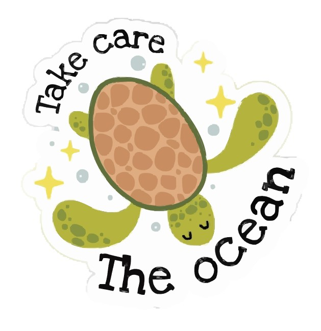

#4WeeksZeroWaste
Tips&Trick
ARTIKEL-TERBARU :
#INFO 1 hari yang lalu
Apa itu “Zero Waste Lifestyle”?
yang menumpuk. Hanya dengan Zero Waste Lifestyle, semua hal itu bisa
terwujud! Eiits,jangan cuma dibayangin,klik artikel untuk cari tau lebih lanjut!
#TIPS 2 hari yang lalu
5 Tips Mudah Untuk Memulai Zero Waste Lifestyle
untuk mulai gaya hidup bebas sampah! Awal mulai nya bisa dari rumah , loh.
Tunggu apa lagi, cek artikel nya sekarang!
#INFO 4 hari yang lalu
Wajib tau! 7 Simbol Daur Ulang dan bahayanya bagi manusia.
Simbol tersebut sering kali terabaikan, namun sebenarnya memberikan informasi
yang sangat penting tentang jenis plastik yang ternyata berbahaya bagi manusia
jika pemakaian nya salah! Buruan klik artikel untuk info lebih lanjut.!